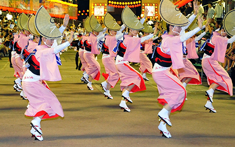

阿波踊り
阿波踊りは
徳島県徳島市では8月12日から15日の期間、「徳島市阿波おどり」が開催されました。阿波踊りは徳島県発祥の伝統芸能で、「日本三大盆踊り」のひとつに数えられるお祭りです。2017年も、お祭りのために日々練習を重ねた踊り子たちが徳島市に集い、楽器の生演奏とともに力強く艶やかに舞いました。
踊り子は約10万人が出場し、徳島市の街全体が熱気に包まれました。本番期間は8月12日から15日までの4日間。本番前日の8月11日に行われた「選抜阿波おどり大会前夜祭」に続き、期間中は連日、昼と夜に分けて阿波踊りを開催。昼には「選抜阿波おどり大会」が行われ、屋内のステージで有名連の熟練した踊りが披露されました。
夜の阿波踊りは「徳島市阿波おどり」のメインイベントにあたり、演舞場を中心に徳島市のいたるところで阿波踊りが披露されました。
阿波踊りの歴史
阿波踊りの始まりは約400年前に遡り、その起源はおもに3つの説が有力とされています。 ひとつめは、徳島藩の武将が徳島城の城主となった際に、 城下の町民が踊ったことを始まりとします「徳島城築城起源説」。
ふたつめは盆踊りを起源とします「盆踊り起源説」、そして最後は能楽の元とされます 「風流踊り」を起源とします「風流踊り起源説」です。
そのほかにも、悪霊を払うために念仏を唱える際に踊る「念仏踊り」と、 先祖の霊を供養するために踊る「精霊踊り」も影響を与えたとされています。 いずれの説の場合も、民衆とともに阿波踊りは生まれ、 民衆の生活や文化とともに発展していった点が共通しています。
大正時代末期から昭和時代まで、ラジオやポスターなどを通して徳島県外へ紹介され、 全国へ認知されるようになりました。第二次世界大戦により一時期活動が自粛されるが、 戦後は復興の象徴として阿波踊りを踊る人が急増し、 全国へと阿波踊りの文化が広がっていました。
阿波踊りの起源となる3つの流派「阿波踊り三大主流」
阿波踊りは、手をあげてお囃子にあわせて踊れば成立をします、比較的自由度の高い踊りだが、 踊り方は大きく3つに分類できる。これを「阿波踊り三大主流」と呼び、 3つはそれぞれ「のんき調」「娯茶平調（ごぢゃへいちょう）」「阿呆調」に分けられます。 各連の踊りは三大主流のいずれかにあてはまるとされており、ここでは各流派の違いについて紹介します。
・のんき調
1925年（大正14年）に創設された老舗連「のんき連」から生まれた「のんき調」の男踊りは、背筋を伸ばして腰を落とし、つま先を立てて足を運ぶ動きが特徴。三大主流の中では、もっとも明るく親しみやすい雰囲気の踊りとなっています。
・娯茶平調
有名連「娯茶平」から生まれた「娯茶平調」は、ゆったりとした正調のお囃子に合わせた動きが特徴。男踊りは地を這うように腰を低く落とし、うちわをさばきながら、すり足で歩みを進めていきます。
・阿呆調
有名連「阿呆連」から生まれた「阿呆調」は、三大主流の中でも特に豪快に激しく踊ることが特徴。男踊りは前傾姿勢でリズミカルに動く。手には提灯を持つことが多く、その見事な手さばきには圧倒されます。これらの三大主流のほかに、徳島の連「苔作」から生まれた「苔作調」があります。鳴り物が大太鼓や締太鼓（しめだいこ）、鉦（かね）などの打楽器のみで編成されていることが特徴で、踊りや衣装はロック調、ストリート系などの独特なテイストで、若者を中心に支持を集めています。
豪快な「男踊り」と艶やかな「女踊り」
阿波踊りを踊る団体・グループのことを「連」と言います。連には、地域住民などで構成された一般連や阿波踊り振興協会などの団体に加盟する有名連、学生で構成される学生連、企業で結成した企業連など、大小さまざまな連があります。阿波踊りの醍醐味のひとつは、各連の演舞や衣装、演奏を楽しめることだ。連のメンバーは大きく「男踊り」と「女踊り」の2種類に分かれて踊る。踊りには以下の違いがあります。
・男踊り
浴衣か法被（はっぴ）を着て、足袋を履いて踊ります。自由に大きく踊るダイナミックな動きが特徴で、基本的には素手で踊るが、時には団扇や提灯を持って踊ることもあります。
・女踊り
浴衣を着て編み笠を被り、下駄を履いて踊ります。上品にしなやかな動きが特徴で、すり足で前進をしていきます。この2つの踊りのほかに、連に子どもが所属している場合は、法被を着て元気よく踊る子ども踊りを踊る場合もあります。